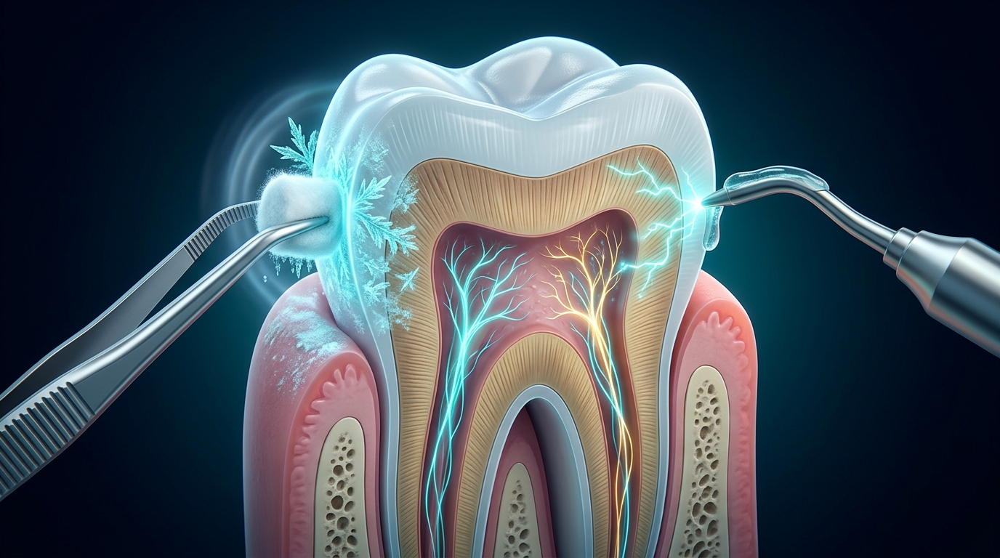

NT-03: Thử lạnh, thử điện và đánh giá tủy: Giá trị, giới hạn, sai số và cách diễn giải

Khi khám răng, nhiều cô bác thường ngạc nhiên khi thấy bác sĩ dùng một viên bông lạnh chạm vào thân răng hoặc đặt một đầu dò nhỏ phát tín hiệu nhẹ lên mặt răng trước khi đưa ra kết luận. Trong chuyên môn Nội nha, đó là thử lạnh (Cold Test) và thử điện (EPT – Electric Pulp Testing). Đây là hai công cụ đánh giá tủy phổ biến nhất tại ghế nha khoa, nhưng nếu không hiểu rõ giá trị, giới hạn và các nguồn gây sai số, người làm lâm sàng rất dễ diễn giải nhầm, dẫn đến quyết định điều trị thiếu chính xác.
1. Bản chất khoa học: Thử cảm giác (Sensibility) không đồng nghĩa với Sức sống tủy (Vitality)
Một điểm quan trọng mà các tài liệu Nội nha hiện đại nhấn mạnh là: cả thử lạnh và thử điện đều chỉ là nghiệm pháp thử cảm giác thần kinh (pulp sensibility tests) chứ không đo trực tiếp dòng máu nuôi tủy (pulp vitality).
- Thử lạnh: Dựa trên thuyết thủy động học của Brännström. Nhiệt độ thấp (khoảng −26°C đến −50°C từ bình xịt lạnh Endo-Ice hoặc −78°C từ tuyết CO₂) làm co rút dịch trong ống ngà, kích thích nhanh các sợi thần kinh A-delta có bao myelin nằm ở vùng ranh giới ngà – tủy, tạo ra cảm giác buốt sắc và ngắn.
- Thử điện (EPT): Dùng dòng điện cường độ thấp tăng dần để khử cực trực tiếp các sợi thần kinh A-delta bên trong tủy, tạo cảm giác tê rần hoặc châm chích nhẹ.
Do chỉ phản ánh đáp ứng thần kinh, một chiếc răng mất dẫn truyền thần kinh tạm thời (như sau chấn thương) vẫn có thể còn tuần hoàn máu bình thường — đây chính là cội nguồn của nhiều sai số nếu bác sĩ chỉ nhìn vào một kết quả âm tính đơn lẻ.
2. Giá trị và giới hạn của từng phương pháp
- Giá trị của Thử lạnh: Là nghiệm pháp có độ chính xác tổng thể cao, dễ thực hiện và hữu ích nhất để phân biệt giữa tủy bình thường, viêm tủy có hồi phục (đau ngắn, hết ngay) và viêm tủy không hồi phục (đau kéo dài dữ dội). Tuy nhiên, thử lạnh khó xuyên qua các răng có mão sứ dày, răng phục hồi lớn hoặc ống tủy bị canxi hóa hẹp ở người lớn tuổi.
- Giá trị của Thử điện (EPT): Rất hữu ích để xác nhận xem còn bất kỳ sợi thần kinh sống nào hay không, đặc biệt trên răng bị thu hẹp buồng tủy ở người trung niên và cao tuổi. Tuy nhiên, giá trị số hiển thị trên màn hình EPT (ví dụ mức 25 hay 60) không dùng để phân loại mức độ viêm tủy, mà chỉ có ý nghĩa định tính (có đáp ứng hay không có đáp ứng) khi so sánh với răng đối chứng.
3. Các nguồn sai số thường gặp: Âm tính giả và Dương tính giả
Để tránh chẩn đoán nhầm, bác sĩ luôn phải cảnh giác với hai nhóm sai số kinh điển:
Dương tính giả (Tủy đã hoại tử nhưng máy vẫn báo "còn sống"):
- Cô lập ẩm không kỹ: Nước bọt tạo cầu nối dẫn dòng điện từ đầu dò EPT sang mô nướu hoặc răng kế cận.
- Tiếp xúc phục hồi kim loại: Đặt đầu dò EPT chạm vào miếng trám Amalgam hoặc mão kim loại nối liền răng bên cạnh.
- Bệnh nhân quá lo âu: Người bệnh phản xạ giật mình vì sợ đau ngay khi chưa có kích thích thực sự.
- Hoại tử lỏng trong ống tủy: Dịch dẫn điện trong ống tủy hoặc tình trạng một ống tủy đã hoại tử nhưng ống tủy khác trong răng nhiều chân vẫn còn tủy sống.
Âm tính giả (Tủy vẫn còn sống nhưng thử không thấy cảm giác):
- Răng mới chấn thương (Concussion / Luxation): Sợi thần kinh bị "choáng" tạm thời mất dẫn truyền trong vài tuần đến vài tháng dù mạch máu nuôi tủy vẫn thông suốt.
- Răng chưa đóng chóp ở trẻ em: Mạng lưới thần kinh A-delta (đám rối Raschkow) chưa phát triển hoàn thiện nên EPT thường âm tính giả.
- Canxi hóa buồng tủy ở người trung niên & cao tuổi: Lớp ngà thứ phát dày ngăn cản sự truyền nhiệt của thử lạnh và làm tăng ngưỡng kích thích của EPT.
- Thuốc giảm đau, an thần hoặc gây tê vùng trước đó: Làm nâng ngưỡng cảm giác tạm thời.
4. Quy trình chuẩn và cách diễn giải thông minh trên lâm sàng
Để kết quả thử tủy đạt độ tin cậy cao nhất, cần tuân thủ nguyên tắc:
- Cô lập và làm khô răng bằng bông cuộn hoặc đê cao su mỏng; với EPT, bôi một lớp gel dẫn điện mỏng (như kem đánh răng) ở 1/3 giữa mặt ngoài răng (tránh chạm lợi và tránh đặt lên phục hồi kim loại/sứ).
- Luôn thử răng đối chứng khỏe mạnh cùng loại (thường là răng đối bên) để bệnh nhân làm quen cảm giác và làm chuẩn so sánh.
- Kết hợp đa dữ liệu: Không bao giờ quyết định mở tủy chỉ vì một lần thử lạnh hoặc thử điện âm tính trên răng mới chấn thương hay răng canxi hóa mà không có triệu chứng và không có tổn thương quanh chóp trên X-quang. Khi cần thiết, kết hợp thêm đánh giá lâm sàng, phim X-quang và theo dõi định kỳ.
Địa chỉ: Số 15 đường Võ Nguyên Giáp, phường Đức Xuân, tỉnh Thái Nguyên
Hotline & Zalo tư vấn trực tiếp: 0912 343 858 · Website: https://tcvuong6-wq.github.io/bsvuong-web/